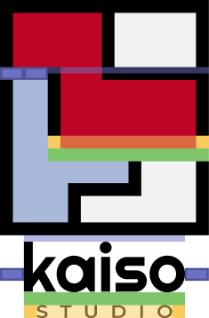
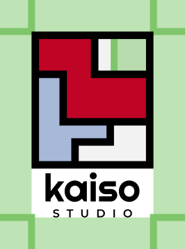

Kaiso is a family, strong feelings, the friendship between four young designers... And above all, Kaiso is an apartment. Our first headquarters, which is also a living space. This is where Kaiso was born, grew up, and matured...
At the core of this logo, we find this apartment, deconstructed into 4 blocks, following the architecture of the space.
Each piece can be seen as a modular element, essential to the logo. This means that the pieces can be arranged in any way desired to adapt our identity to different mediums, using the blocks as graphic masses.
The logo also has an infographic meaning. Each color represents a group of rooms, hierarchically organized according to the time spent on them within our working hours. Please refer to the legend below.
PIECES IN WHICH WE SPEND +80% OF OUR TIME (OFFICE AND LIVING ROOM)
HERE WE SPEND LESS THAN 20% OF OUR TIME (KITCHEN AND BATHROOM)
BEDROOMS: WE NEVER WORK HERE (EXCEPT MIKE...)
"Kaiso" is the name of our agency. The choice of the Righteous typeface resonates with our graphic references and our logo. The presence of simple curves breaks the straightness of the logo and other letters.
The "STUDIO," on the other hand, is written in Montserrat, a nod to Kaiso's very first graphic identity. This highly versatile typeface was the original font of the studio. We now use it more moderately.
The logo (both horizontal and vertical) also works in a deconstructed manner. In fact, the entire brand identity operates on the notion of modularity. It is important to convey to the viewer that the pieces are interchangeable.
However, caution should be exercised not to overdo it (in people's minds, the logo should remain rectangular), but they should understand that it can be dynamic from time to time.
It is crucial to maintain a cohesive composition without distorting or separating the blocks too much.
In all uses of the logo with the text below, it is essential to maintain the correct proportions between the logo and the typography. Therefore, please strictly adhere to the proportions outlined below when reproducing the logo.
Regardless of the logo's usage, it is crucial to maintain a clear space or exclusion zone (margin) between the logo and other elements.
